02 · USER RESEARCH · PRODUCT DESIGN
QuadGo
A fitness-app prototype designed to help UIUC students fit physical activity into busy schedules through flexible workout planning, campus activity discovery, and social motivation.
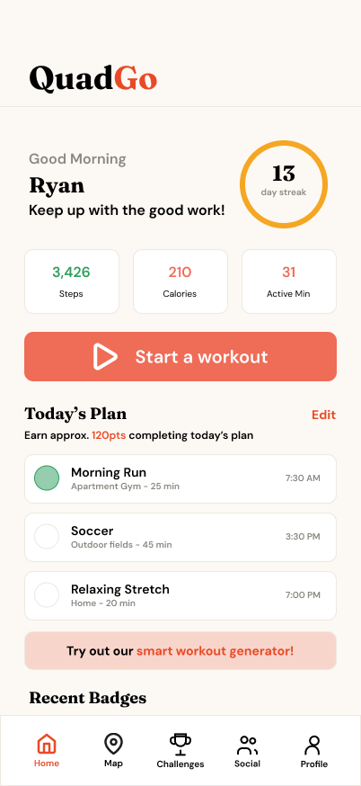
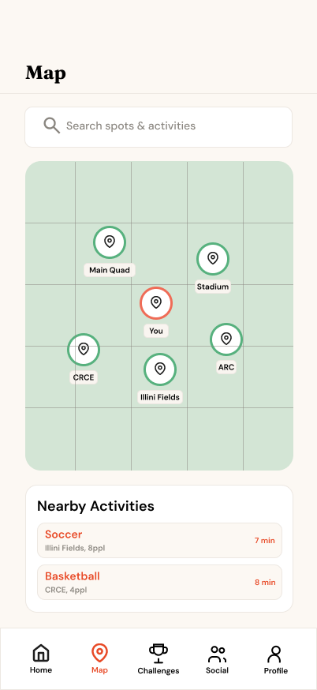
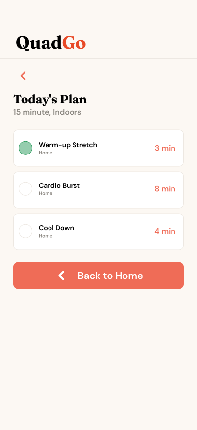
Home, campus activity discovery, and a sample workout plan. QuadGo is a design prototype; the activity totals, crowd levels, and rewards shown are demonstration content. Click the screens to open the Figma prototype.
My contribution
On a four-person team with Dhruv Sawhney, Colin Roland, and Kaushik Setty, I owned three parts of the work:
- The Figma prototype. I designed and built the interface and the interactive prototype.
- Iteration. I turned evaluation findings and teammates’ suggestions into the redesigned screens.
- Usability testing. I designed the comparison study and moderated three of its twelve sessions.
The early research and the final round of updates were shared across the team.
Making room for exercise
QuadGo began as a fitness-tracking concept for UIUC students. Our research pointed to a broader problem: wanting to exercise did not necessarily mean students had the time, motivation, or a convenient place to do it. Academic workloads and crowded facilities could make even a short workout feel difficult to arrange.
We shifted the design toward helping students decide what to do and where to go. The central question became: how could we make physical activity easier to fit into an ordinary student day?
Three rounds of research and evaluation
Round 1 · Needs-finding with 18 students
Surveys and interviews with 18 UIUC students looked at what kept them from exercising regularly and what would bring them back. Three survey results shaped the feature set:
- 62%
- said time constraints in their daily schedule got in the way of exercise.
- 50%
- said they were most motivated by earning real-world rewards for exercising.
- 40%
- named a barrier that exercising away from the main campus gyms (ARC, CRCE) could remove.
- Fit the available time. Offer short, flexible options rather than assuming everyone can commit to a long gym session.
- Make alternatives visible. Help students find exercise locations beyond the campus fitness centers and see useful information before choosing.
- Give a reason to return. Explore streaks, rewards, and social participation, while keeping the practical planning tools easy to reach.
Round 2 · Heuristic review and formative evaluation
I reviewed the first prototype against usability heuristics alongside a formative evaluation with students. Four problems stood out, and each became a change in the next version:
- The map couldn’t answer “should I go there?” Location markers weren’t clickable, so the details needed to choose a place were out of reach.
- The daily plan felt cut off. Students saw the planner as separate from Home, and the plan couldn’t be adjusted.
- Rewards were hard to find. The screen for redeeming earned rewards wasn’t easy to reach from Home.
- Leaderboards were hard to read. There was a single ranking, and feedback asked for clearer, tappable categories.
Round 3 · Summative comparison with 12 students
Twelve college students, with exercise habits ranging from under twice a week to six times a week, compared the first and revised designs side by side. The method and results are under Evaluation.
What changed, before and after
1. Plan a workout one question at a time
A new guided generator breaks planning into a short sequence: choose an available duration, choose indoors or outdoors, then see a suggested routine. Showing only the choice needed at each step (progressive disclosure) avoids asking someone to build an entire plan at once, and options start at 15 minutes for the 62% who cited time constraints.
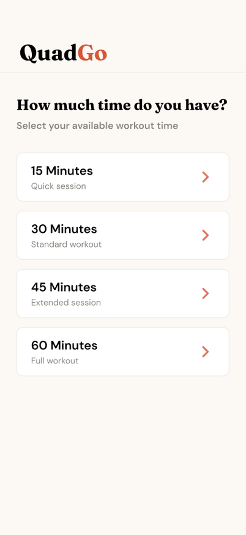
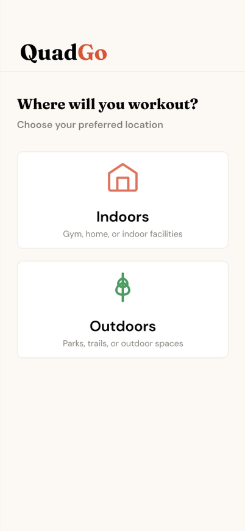
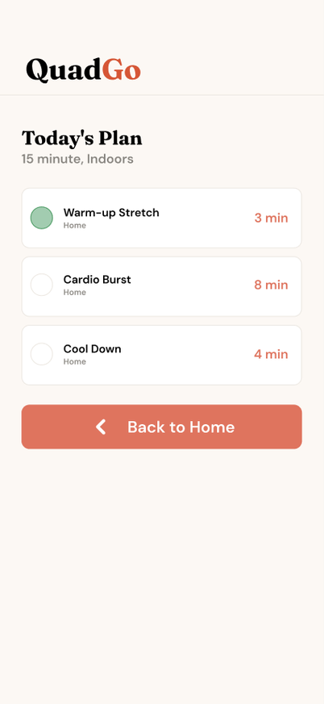
2. Put location details where the decision happens
Every map marker now opens a pop-up with the activities available there, the distance, reward points, and a crowd indicator, so students can weigh an option without leaving the map. The crowd meter moved from a separate panel into each location.
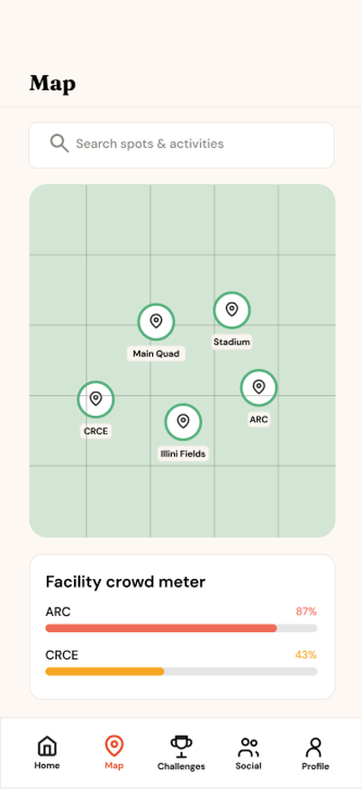
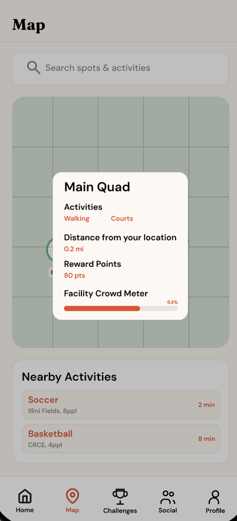
3. Keep a guided plan editable, and on Home
Today’s Plan gained an Edit action and a link into the generator, and students can now edit tasks or add their own. A suggested routine still leaves room for personal preferences.
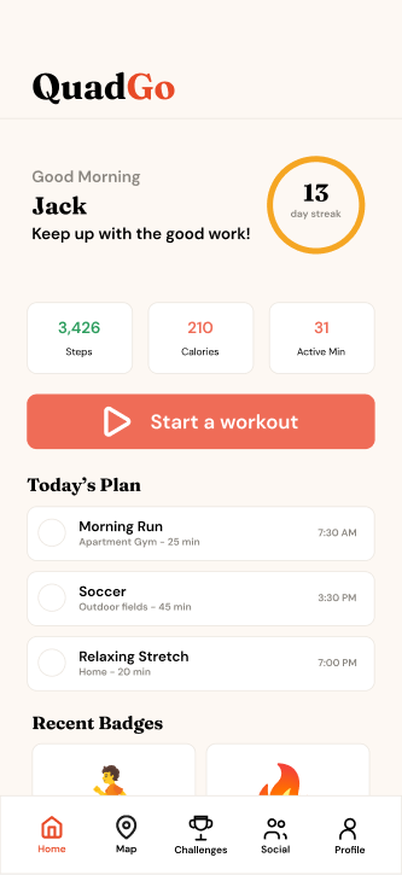
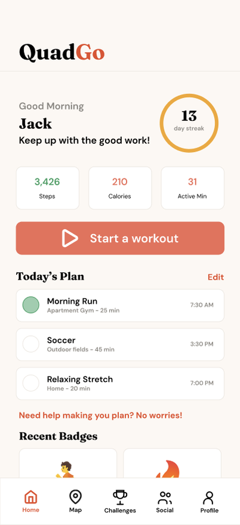
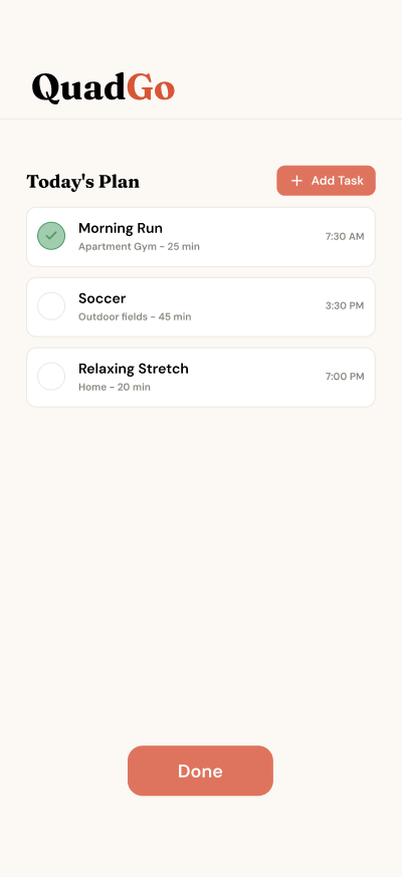
4. Turn one leaderboard into three
The single ranking became Friends, Campus, and All Time views with clearer category tabs. Different comparisons give students different reasons to keep going.
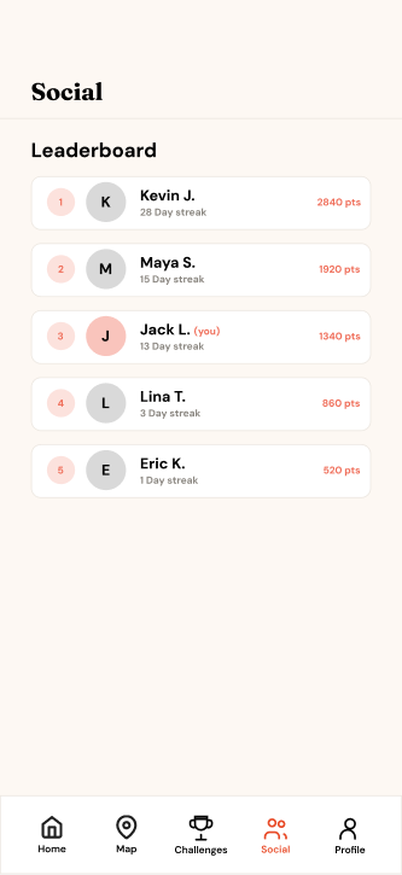
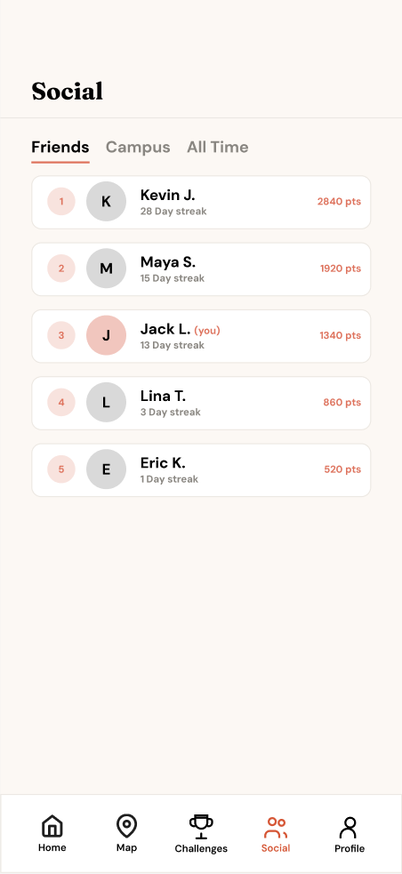
Streaks, badges, and points provide a second layer of encouragement around these practical tools, and reward redemption became easier to reach from Home.
Evaluating the revised design
Each of the four team members moderated three participants. Participants compared the earlier and revised designs while thinking aloud, then tried tasks with the workout planner, leaderboards, and exercise-location map. Afterwards they rated each redesigned feature from 1 to 10; anyone rating below 7 was asked what should improve.
| Redesigned feature | All sessions (n = 12) | My sessions (n = 3) |
|---|---|---|
| Guided workout generator | 8.8 | 8.7 |
| Map pop-ups | 8.8 | 9.7 |
| Editable daily plan | 8.8 | 9.7 |
| Three leaderboards | 8.1 | 7.7 |
Means pooled from four groups of three. One group’s editable-plan average was reported as 9 for ratings of 7, 7, and 10; it is recalculated here as 8. The earlier design was not rated, so these scores describe how participants received the redesign, not a measured improvement.
What participants told us
- Interactive cues matched expectations. Participants in my sessions described the flow as complete; one noted that everything they expected to be clickable actually worked.
- Location information helped with choosing a place. Participants responded well to the map pop-ups; one found the crowd indicator useful in deciding where to work out.
- The leaderboard still needed clearer signals. It scored lowest, and one participant was unsure whether categories changed by tapping or swiping.
- Students wanted more flexibility and shared activity. Requests included joining challenges with friends, workouts longer than an hour, and saving favorite locations.
Turning feedback into revisions
The team made another round of changes after the summative study:
- More control in the guided flow. Back navigation lets users recover from a mistaken choice, and clearer visual treatment helps explain the sequence.
- More context on the map. A current-location marker helps orient users among the exercise locations.
- More ways to participate. Group challenges extend the social concept beyond comparing leaderboard positions.
- More visible goals. Unearned badges and point incentives for the daily plan show what users can work toward.
Other requests, such as favorite locations and workout options longer than an hour, remained opportunities for further exploration.
What we delivered
We delivered an interactive mobile-app prototype connecting a daily activity overview, workout planning, campus location discovery, challenges, and social progress. The work moved from a tracking concept toward a more practical sequence: find an option, make a plan, and see a reason to return.
For a quick walkthrough, start on Home, select the smart workout generator, choose 15 minutes and Indoors, and review the sample plan. Then explore Map and open a location to see its details.
What I learned
The most useful feedback came from watching people interpret the interface. A control that felt obvious to our team could still leave a participant wondering whether to tap or swipe. Those moments gave us specific changes to make, instead of relying only on our own familiarity with the design.
My main takeaway was to test earlier. A basic wireframe and a connected flow can already reveal problems with navigation and expectations; the interface does not have to be visually finished before that learning begins.
What I would test next
Our summative study rated the redesign only. Next time I would rate both versions on the same tasks and add task-success and completion-time measures, so the comparison shows a difference rather than a preference. I would also check that every prototype branch leads to a consistent result. Longer-term testing would then be needed to learn whether the planning tools, rewards, and social features help students keep an exercise routine.
Team & tools
Gavin Wang, Dhruv Sawhney, Colin Roland, and Kaushik Setty. Designed and prototyped in Figma. Before-and-after screens are taken from the team’s summative evaluation report.
The team used Claude to generate some icon vectors and Figma Make to assist with additional leaderboard, task-editing, and guided-planning frames. These tools supported production alongside the team’s design, prototyping, and evaluation work.